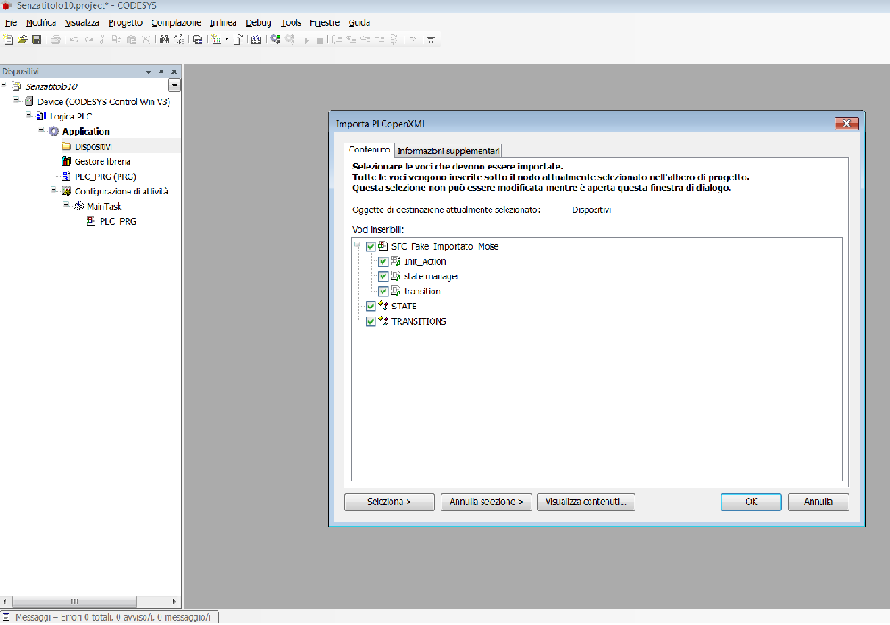

Guida al software
- Descrizione dell'ambiente
- Selezione del documento XMI
- Analisi del documento
- Impostazione dell'ambito di scopo delle variabili
- Conversione del documento
- Utilizzo del file XML
- Come configurare Eclipse
L'area di lavoro è suddivisa in quattro zone:
-
Una barra degli strumenti con i relativi pulsanti per svolgere le operazioni necessarie alla conversione;
- Consente di selezionare il file con estensione ".uml", contenente il diagramma a stati macchina scritto in XMI;
- Analisi del documento. Viene eseguito il parsing del file, individuando tutte le caratteristiche del diagramma UML;
- Conversione in formato PLCOpenXML.;
- Guida all'utlizzo del software.
-
Finestra dei messaggi del sistema. Durante l'utilizzo del software, i vari messagi del sistema mostrati nll'apposita area. Esistono vari tipi di messaggi:
- quelli attinenti all'analisi che indicano quali e quanti States sono stati individuati, quante transazioni ed eventualmente quante variabili;
- messaggi di errore;
- messaggi di convalida.
-
Area che definisce l'ambito di scopo delle variabili. Nella fase di analisi del documento codificato in XMI, se vengono individuate delle variabili, esse sono mostrate in quest'area. L'ambiente consente di scegliere tra i seguenti ambiti di scopo:
- GLOBAL;
- LOCAL;
- TEMP;
- INPUT;
- OUTPUT;
- CONSTANT;
L'impostazione di DEFAULT è fissata su GLOBAL. E' possibile selezionare un solo ambiente per variabile. Per ognuna di esse viene visualizzato anche il suo tipo. Sono accettati tutti i tipi di dati che CodeSys conosce; qualora il tipo di dato non gli è noto, viene impostato come DERIVED, dando così la possibilità all'utente di associare in seguito il suo tipo con delle librerie esterne.
-
Area visualizzazione documento XML. Eseguendo la conversione, viene generato il file XML, al termine dell'operazione viene visualizzata in maniera automatica la struttura dell'albero XML ed il suo contenuto.
Apertura del file XMI con estensione .uml
Selezionare il file che si desidera convertire. Qualora il codice del diagramma UML state machine descritto in formato XMI fosse memorizzato in un formato differente dal primo, svolgere le seguenti operazioni:
- aprire in un blocco note il file XMI;
- salvare con nome ".uml"
Cliccando sull'apposito pulsante, avviene l'analisi del documento XMI dove vengono individuati gli State, le Transitions, tutti i pseudosati, le variabili con i loro tipi.
Terminata l'analisi, nell'area messaggi sono mostrati i vari output testuali inseriti durante il parsing del file. L'impostazione di default del tool, prevede che gli States individuati siano rinominati automaticamente con carattere alfabetico maiuscolo e numerico. Ad esempio lo stato con il nome "B4", indica che lo State appartiene al secondo livello in base al Table pattern di codifica, mentre il numero è attribuito in maniera progressiva. le transitions vengono rinominate e numerate in maniera automatica es. "TRX 3".
Nota. Nel file XML che sarà generato sarà evidenziato anche l'associazione del veccio nome dello stato macchina con il nuovo.
Impostazioni dell'ambito di scopo dell variabili
Come già descritto in precedenza, se sono state individuate delle variabili essere saranno visualizzate nell'apposita area. Per ogni variabile individuata viene mostrato anche il suo tipo. I tipi di dato che il software riconosce sono: BOOL, BYTE, BIT, WORD, DWORD, LWORD, SINT, USINT, INT, UINT, LINT, DINT, REAL, LREAL, STRING, TIME, TOD, DATE,DT.
Tutti i tipi che non sono riconosciuti come predefiniti, vengono impostati come DERIVED, ossià definiti dall'utente. In questo modo si ha la possibilità di utilizzare tipi di dati definiti in librerie esterne o dall'utente.
Nota GLOBAL. Si informa che le variabili definiti con ambito GLOBAL, vengono codificate come VAR_STAT, per cui all'interno dell'ambiente di CodeSys dovranno essere spostate in VAR_GLOBAL.
Nota variabili. Le variabili possono essere definite nel diagramma UML, utilizzando la prima transition di avvio della State Machine. Mentre inserendo le variabili nell'action di uno state, queste saranno riportate come un action in plc.
Definizione di variabile: << NOME VARIABILE>>=VALORE
Cliccando sull'apposito pulsante, viene eseguita la conversione del file dal formato XMI al formato XML secondo lo standard PLCOpenXML come formato di scambio dati. Il file generato viene mostrato nell'area in basso all'interno dello splitpane:
- a sinistra viene visualizzata la struttura del file;
- a destra viene mostrato il suo contenuto.
Per l'utilizzo del file XML generato occorre:
- aprire un nuovo progetto standard in CodeSys
- Posizionarsi prima sulla voce Application;
- Aprire il menu Progetto->Importa PLCOpen XML in corso
- selezionare il file generato "outputFileCodeSys.xml";
- selezionare le strutture dati e la POU individuata;

- conferma l'importazione. Durante la fase di importazione sarà mostrato un avviso, informando l'utente che esiste già un oggetto con il nome PLC_PRG, scegliere: SOSTITUISCI OGGETTO PRESENTE.
- Al termine si avrà l'oggetto Pou (program Organization Unit) importata.
- Terminata l'importazione, se il grafico UML è stato ben costruito, è possibile compilare il progetto PLC e mandarlo subito in esecuzione.